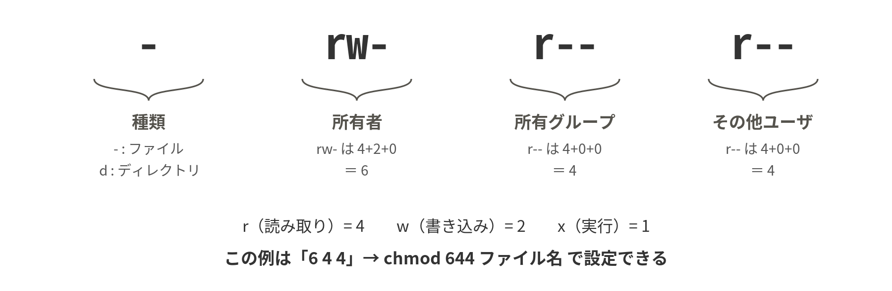

5-1マルチユーザシステム
Linuxは誕生のときから、1台のコンピュータを複数の人間が同時に使うことを前提に設計されている。各ユーザには一意の番号（UID：User ID）が割り当てられ、ユーザは1つ以上のグループ（GID：Group ID）に所属する。ファイルの所有権もアクセス権もこのUID/GIDに基づいて管理される。実習でluantiユーザを作ってサービスを動かしたのは、このマルチユーザの仕組みを「権限の分離」に応用したものである。
ユーザの情報は次のファイルに保存されている。これらは「設定はテキストファイルに保存される」というLinuxの原則の好例であり、catで中身を見ることができる。
| ファイル | 内容 |
|---|---|
/etc/passwd | ユーザ名・UID・ホームディレクトリ・ログインシェルの一覧（名前に反しパスワードは入っていない） |
/etc/shadow | パスワードのハッシュ値。rootのみ読める |
/etc/group | グループとその所属メンバーの一覧 |
※ パスワードは平文ではなく「ハッシュ値」で保存される。ハッシュは一方向の変換であり、元のパスワードには戻せない。ログイン時は入力をハッシュ化して保存値と比較する。パスワードを忘れたとき管理者でも「教える」ことができず「リセット」しかできないのはこのためである。
5-2rootとsudo
UID 0 のユーザをrootといい、すべての権限チェックを素通りできる特別な存在である。強力である反面、rm -rf の対象を打ち間違えるだけでシステムを破壊できる。そこで現代の運用では、rootで直接ログインする代わりに、一般ユーザとして作業し、必要なコマンドだけをsudoで実行する。sudoには次の利点がある。①root本人のパスワードを共有しなくてよい。②誰がいつ何を実行したかログに残る（journalctlで確認できる）。③操作のたびに「これは管理者権限が必要な操作だ」と意識する機会になる。sudoを使えるのはsudoグループ（ディストリビューションによってはwheelグループ）に所属するユーザだけであり、細かい許可設定は /etc/sudoers で管理される。
この考え方を一般化したものが最小権限の原則である。「プログラムにもユーザにも、目的に必要な最小限の権限だけを与える」。実習でsudo権限を持たないluantiユーザを作ってサービスを動かしたのは、万一ゲームサーバが乗っ取られても、被害をそのユーザの権限の範囲に閉じ込めるためである。
5-3パーミッションの仕組み

ファイルのアクセス権は、所有者・所有グループ・その他ユーザの3者それぞれに、r（読み取り）・w（書き込み）・x（実行）の3種類を設定する。ディレクトリの場合は意味が少し変わり、rは「中の一覧を見られる」、wは「中にファイルを作成・削除できる」、xは「中に入れる（cdできる）」である。数値表記はr=4、w=2、x=1の合計で表し、chmod 755 のように使う。よく使うパターンを覚えておくとよい。
| 数値 | 記号 | 典型的な用途 |
|---|---|---|
755 | rwxr-xr-x | プログラム・スクリプト、ディレクトリ |
644 | rw-r--r-- | 一般的なファイル（他人は読めるが書けない） |
600 | rw------- | 秘密にしたいファイル（SSH秘密鍵、パスワードファイル等） |
700 | rwx------ | 自分専用のディレクトリ |
なお、新規作成されるファイルのパーミッションの初期値はumaskという設定で決まる。また、/tmp のような共有ディレクトリには「作った本人しか消せない」ようにするスティッキービット（t）という特殊な権限が付いているなど、発展的な仕組みもある。ls -ld /tmp で確認してみてほしい。